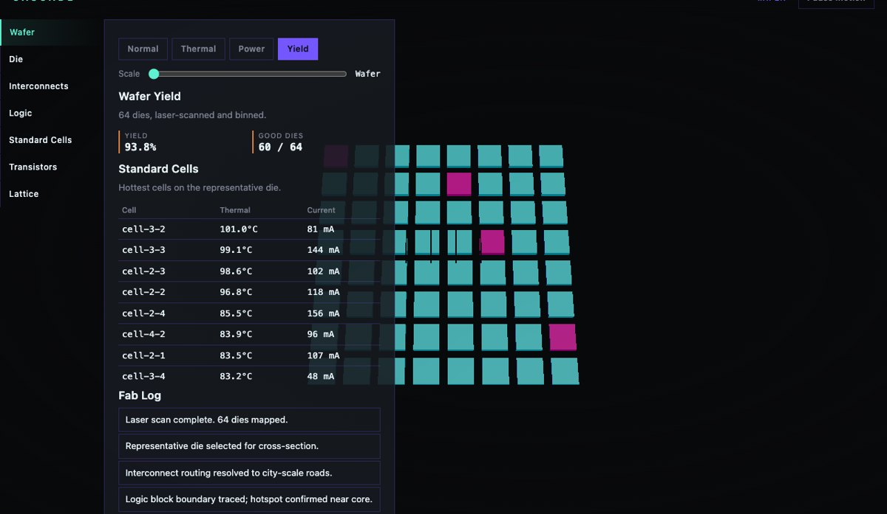
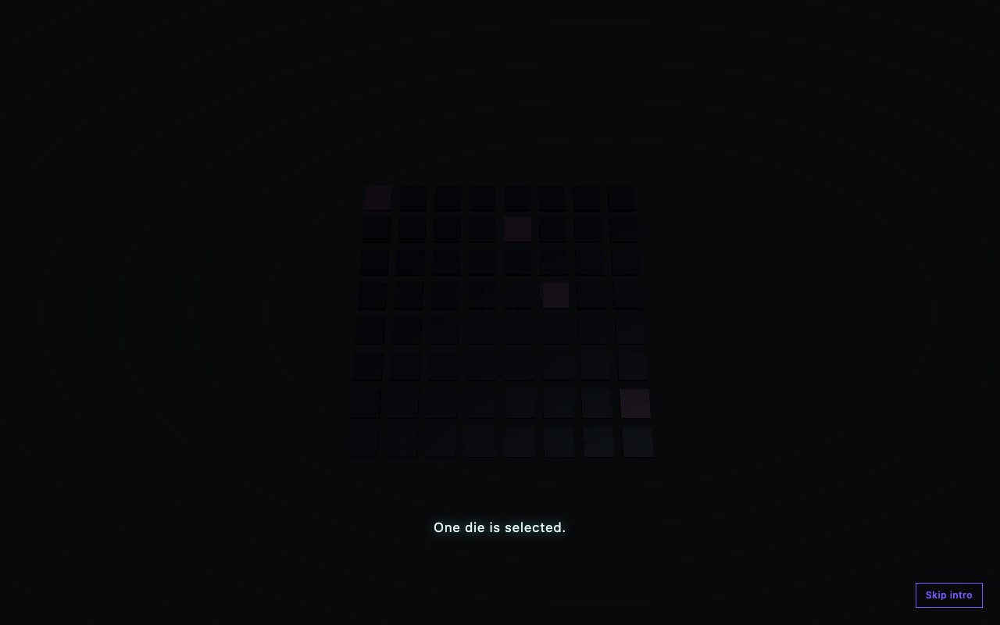
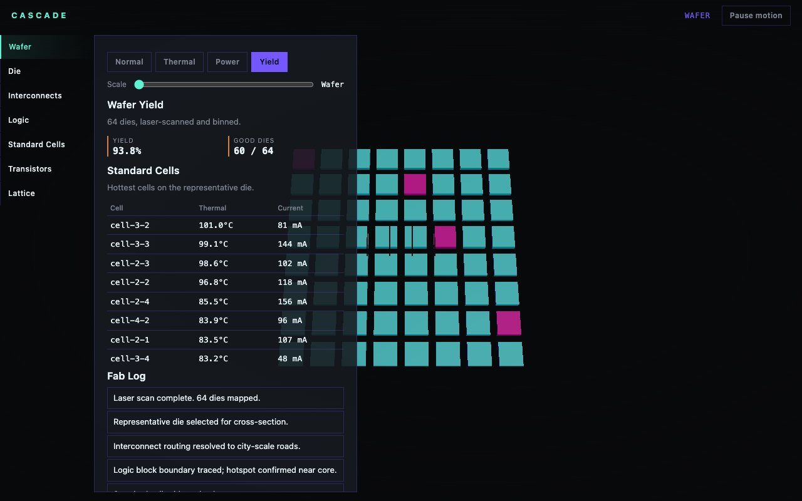
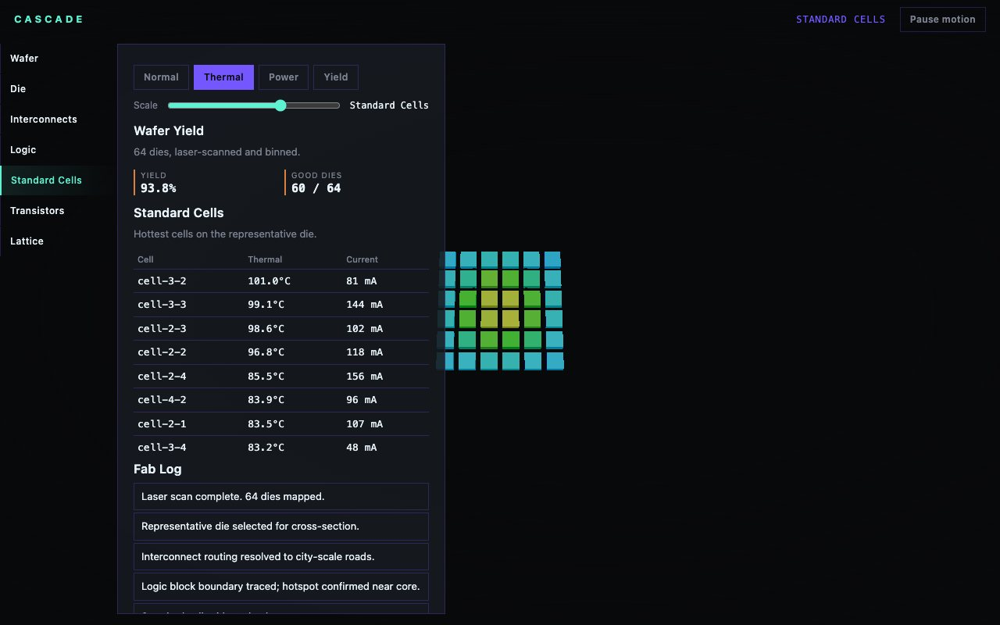

Blender · three.js · motion design · 2026-10
What Does Zooming From Wafer to Atom Actually Look Like?
A semiconductor chip architecture, thermal and yield intelligence platform: one continuous zoom value carries the camera from a 64-die wafer down through interconnects, logic blocks and standard cells to the atomic lattice, with thermal, power and yield overlays recomputed live.

Built from blueprint 03 of a written build book (Advanced Engineering Build Book, Volume VIII) as one vertical slice, using the five-tool-design-pipeline skill: an Awesome Design file for type/spacing scale only, the Taste/Impeccable checklist applied by hand, Playwright for QA (including a real rendered-pixel-color assertion, see below), Three.js as the product. Everything is synthetic: the die defect map, cell thermal/current values and fab log come from a deterministic function, not a real wafer. Not built: WebGPU compute, a Python numerical service, auth, a physical-GPU measurement.
01 — The problem
The book's rule for this blueprint is that scroll controls scale, not page position: forward zooms from the wafer to the atomic lattice, reverse zooms back out, and three overlay modes (thermal, power, yield) have to recompute live rather than being baked images.
02 — What I built
One repository with the whole pipeline.
- A scripted asset:
model/build.pybuilds a die block and an atomic lattice unit cell. - A domain model: deterministic wafer defect density (radial bias, like a real wafer's edge effects), per-cell thermal and current fields, pure and unit-tested.
- A browser runtime where a single zoom value (
state.t, 0 to 6) drives both the camera's dolly distance and every layer's fade-in/fade-out opacity, so crossing a scale boundary cross-fades instead of popping. - An intro that scans the wafer, dives through every scale station, and hands off through a light mask at the same screen point.
- Fallbacks: poster for no WebGL, static keyframes for reduced motion.
03 — How it was built
- 01
A real bug, found by looking at the render instead of the readout
THREE.InstancedMesh.instanceColorisnulluntilsetColorAtis called once. The original per-frame color-update loop bailed out wheneverinstanceColorwas still null, which meant it could never reach the call that would create it: a chicken-and-egg deadlock. Every die and cell rendered in flat default white, tinted only by scene lighting, for every mode including Yield. The automated tests didn't catch it (the visual-regression suite runs the poster fallback, not WebGL; the interactive tests only checked a DOM readout). Fixed by callingsetColorAtonce in the matrix-setup effect, which runs unconditionally.data.dies.forEach((die, i) => { d.position.set(...); im.setMatrixAt(i, d.matrix); im.setColorAt(i, white); // creates instanceColor up front }); - 02
The same bug, found retroactively in two earlier blueprints
RIFT's building-risk coloring and AURELIA's field-coil current coloring had the identical pattern. Both were fixed and redeployed the same session; see their git history. A new e2e test here samples actual rendered pixel colors (not a DOM readout) specifically so this class of bug fails a test next time.
- 03
One zoom value, seven scale stations
layerOpacity(t, idx) = max(0, 1 - abs(t - idx) * 1.1)is the entire cross-fade system: every layer (wafer, die, interconnects, cells, lattice) computes its own opacity from the same scalar, so there is no separate 'which layer is active' state to keep in sync with the camera.
04 — Results
The wafer forming in the intro:

Yield mode, after the fix:


Checks. 11 unit and API tests, 19 Playwright tests including a rendered-pixel-color assertion, clean typecheck.
Performance, SwiftShader (no GPU claim). 12-14 draw calls, under 200 triangles at the cells station; 566 KB gzipped JS. Median 16.7 ms per frame.
05 — What I'd do next
- Measure on a physical GPU and a mid-range phone.
- Add the remaining Power mode's interconnect animation (currently a static tint, not a flowing pulse).
- Apply the same rendered-pixel-color e2e check pattern to RIFT and AURELIA's existing suites.